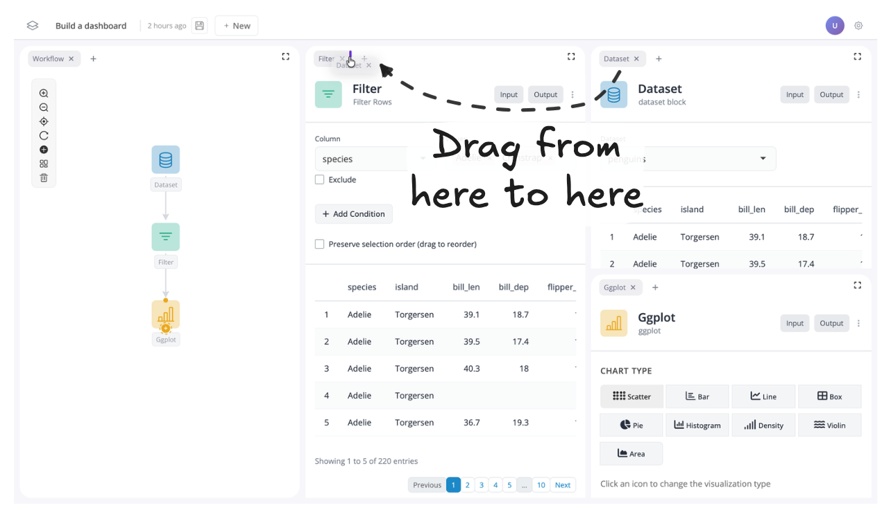
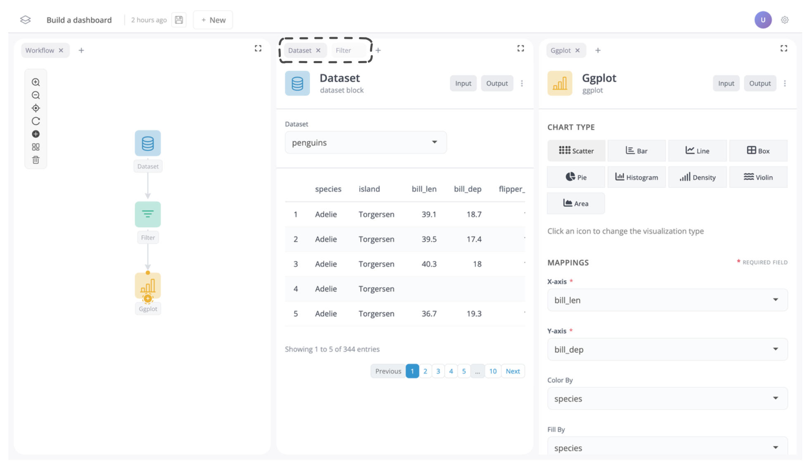
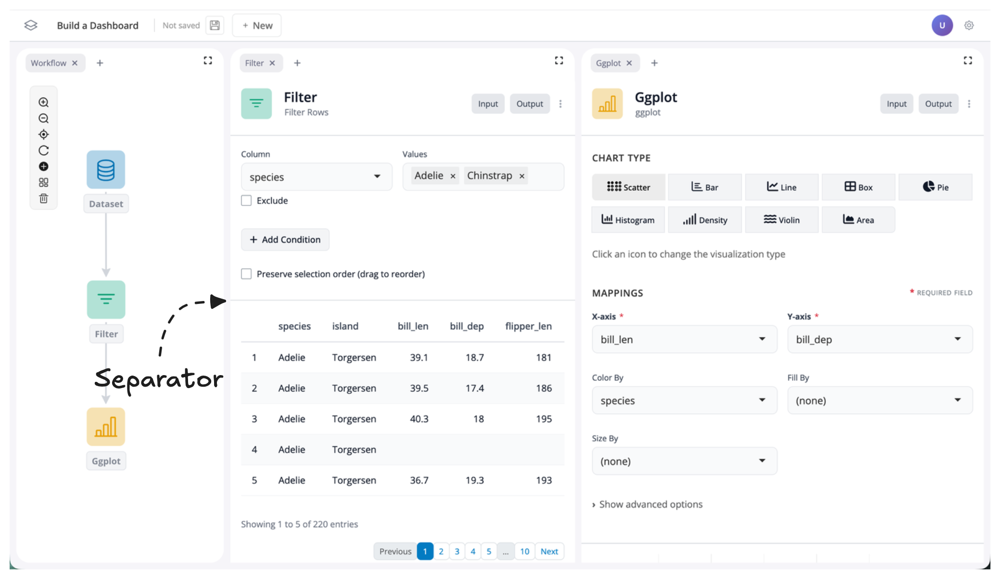
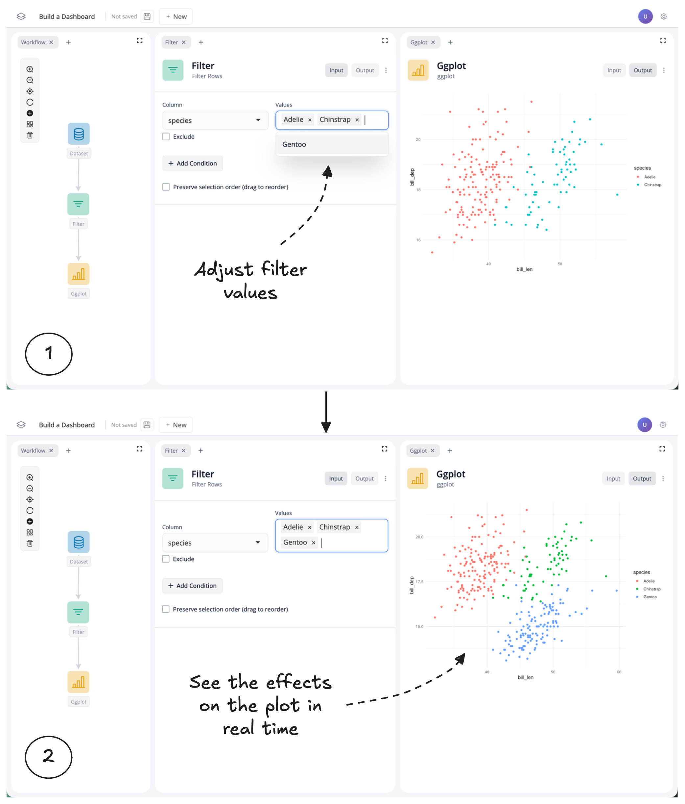

Build a dashboard
In this tutorial you will learn how to transform a blockr workflow into a dashboard you can share with others.
This tutorial will use the data workflow created in the Build Your First App tutorial. Make sure to complete that tutorial first before proceeding with this one.
Rearrange your layout
You can drag and drop windows to customize your workspace however you like. You can move them around, organize them into tabs, remove them, and resize them. Let’s see how each of these features work:
Move windows
To move a window, grab the grey tab at the top and drag it wherever you like.
Let’s start by dragging the plot block down underneath the dataset and filter blocks. As you drag a window, you’ll see a purple highlight showing where it will go when you drop it.
Let’s move the plot block below the dataset and filter blocks to see how this works:

Once moved your app should now look like this:

Next, let’s move the filter block to the left:

Your app should now look like this:

Group windows
You can also group windows into tab groups. To do this, simply drag a tab next to another tab to group them together.
For instance, let’s move the dataset block from the tab group on the right to the tab group on the left:

You should now see the dataset block is in the left tab group:

Remove windows
Sometimes you may wish to just remove a window all together. To do this, just click on the “x” next to the window name in the tab.
For instance, let’s remove the dataset window, as it might not be much use to see in our dashboard:

If you want to reverse this, you can also click the “+” button to add a window back into your app:

But for now, let’s leave the dataset block removed.
Resize windows
At this point your app should have the graph of blocks on the left, the filter block in the middle, and the plot block on the right. Each window should take up approximately the same width:

To create more space for our filter and plot blocks, let’s resize their windows. To do this, just drag the edge of the respective window to change its size:


Toggle inputs/outputs on and off
To finish creating our dashboard, we’ll customize what users can see and interact with by controlling the visibility of different parts of our app.
Understanding Block Inputs and Outputs
Each block has two components:
- Inputs – the controls for a block
- Outputs – the return values (such as data or a plot)
Inside each block, you’ll see inputs and outputs separated by a faint grey line:

Toggling Visibility
You can show or hide inputs and outputs using the “Input” and “Output” buttons located in the top-right corner of each block:

By default, all inputs and outputs are visible. To change this, simply click the input or output buttons to toggle the respective component on or off.
Example: Creating a Curated Dashboard View
Let’s toggle the output “off” for our filter block and the input “off” for our ggplot block:

You should now notice two things:
- The output data table for the filter block and the input controls for the plot block are no longer visible
- The input/output buttons change color to indicate whether their component is shown or hidden
By hiding the filter outputs and plot inputs, we’ve created a curated dashboard view where we control what users can see and interact with. In this case, users can now adjust the filter values and see the effects on the plot in real time, without being distracted by unnecessary components.

Summary
In this tutorial you learned how to transform your blockr workflow into a polished dashboard by customizing the layout and controlling what users see. You learned how to:
- Move windows by dragging tabs to rearrange your workspace layout
- Group windows into tabs by dragging them next to each other
- Remove windows using the “x” button (and add them back with the “+” button)
- Resize windows by dragging their edges to emphasize important components
- Toggle inputs and outputs on and off using the buttons in the top-right corner of each block
By combining these techniques, you created a curated dashboard view that controls what users can interact with and see. You now have the skills to build custom dashboards tailored to your audience. Whether you’re creating an interactive report for stakeholders or a data exploration tool for colleagues, you can design layouts and control visibility to create exactly the experience your users need.